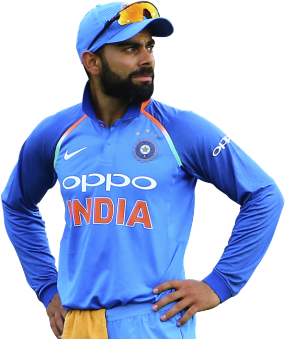

Presenting you VIRAT KHOLI. The King of Cricket.

CARREIR
Born and raised in New Delhi, Kohli trained at the West Delhi Cricket Academy and started his youth career with the Delhi Under-15 team. He made his international debut in 2008 and quickly became a key player in the ODI team and later made his Test debut in 2011. In 2013, Kohli reached the number one spot in the ICC rankings for ODI batsmen for the first time. During 2014 T20 World Cup, he set a record for the most runs scored in the tournament. In 2018, he achieved yet another milestone, becoming the world's top-ranked Test batsman, making him the only Indian cricketer to hold the number one spot in all three formats of the game. His form continued in 2019, when he became the first player to score 20,000 international runs in a single decade. In 2021, Kohli made the decision to step down as the captain of the Indian national team for T20Is, following the T20
PERSONAL LIFE
Virat Kohli was born on 5 November 1988 to Prem Kohli and Saroj Kohli in Delhi, India. His father was a criminal lawyer while his mother is a housewife. He was bred in Delhi's Uttam Nagar and attended Vishal Bharti Public School and Saviour Convent. Kohli's father was bed-ridden for a month and succumbed to cardiac arrest on 18 December 2006. In 2013, he started dating Bollywood actress Anushka Sharma. The couple soon earned the nickname Virushka. Virat and Anuskha tied the knot in an intimate ceremony on 11 December 2017 in Florence, Italy. The couple gave birth to a daughter named Vamika.
A Tribute page to VIRAT KHOLI